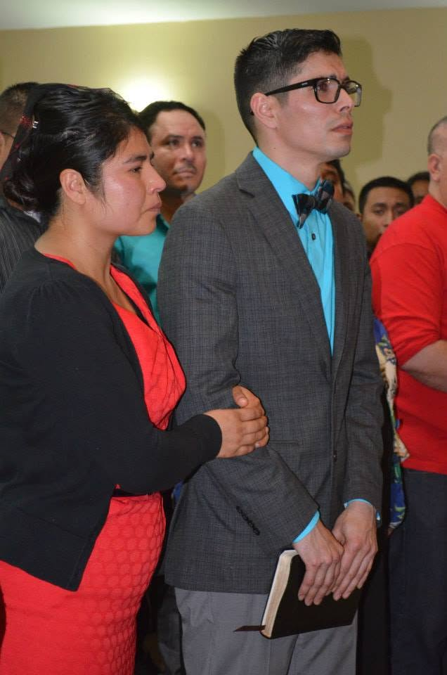
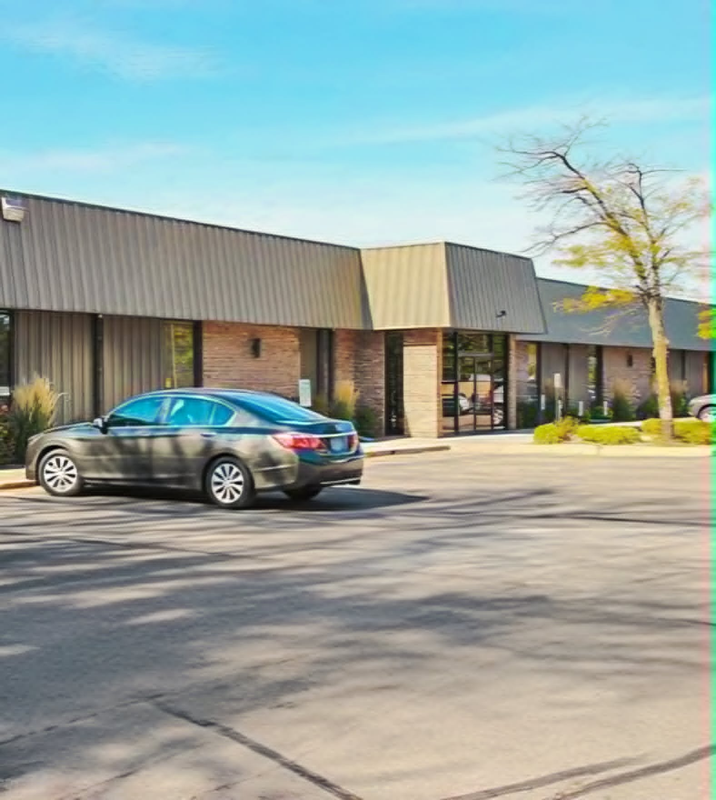
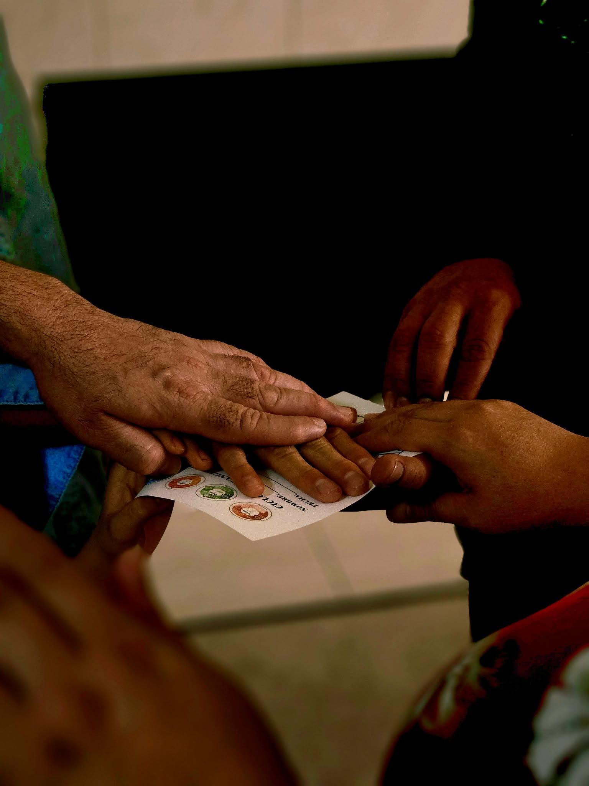
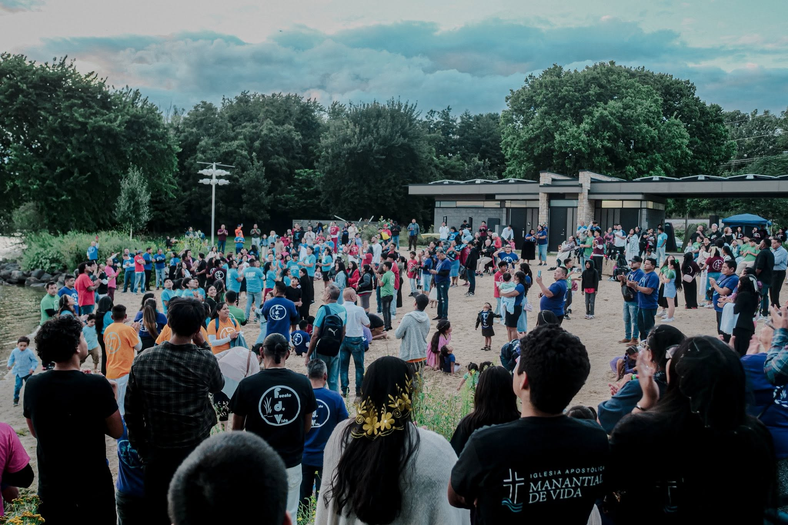

En 2014, el pastor Jacobo Castillo y Carla Rosales fueron enviados desde la iglesia Templo Emanuel con la misión de abrir una nueva congregación en Madison, WI. Este llamado nació del deseo de llevar el mensaje de Jesucristo a nuevas familias y servir a la comunidad con amor, fe y disposición.
Confiando en la dirección de Dios, comenzaron esta obra con una visión sencilla pero firme: formar una iglesia donde cada persona pudiera encontrar esperanza, crecer en su relación con Dios y descubrir un lugar al cual llamar familia.

Con fe y un fuerte deseo de servir a Dios y a la comunidad, comenzaron las reuniones en un edificio pequeño. Cada encuentro representaba un paso de obediencia y una oportunidad para compartir la Palabra, orar juntos y conocer a más personas en Madison.
Aunque los recursos eran limitados, el entusiasmo y el compromiso de las primeras familias hicieron posible que la congregación siguiera avanzando. Lo que comenzó con reuniones sencillas fue tomando forma como una comunidad unida alrededor de la fe.

La iglesia ha crecido a través de células, grupos de amistad donde las personas comparten la Palabra de Dios, fortalecen su fe y se apoyan como una familia espiritual. En estos espacios, cada integrante puede ser escuchado, acompañado y animado a seguir creciendo.
Las células también han permitido que la iglesia se acerque a distintos hogares y familias de Madison. A través de la oración, la convivencia y el servicio, estos grupos se han convertido en una parte fundamental del desarrollo de la iglesia y de su misión.
La adquisición del templo actual fue un paso significativo para expandir la obra de Dios en Madison. Este logro representó una gran bendición y el resultado de la oración, la perseverancia y el esfuerzo de muchas personas que creyeron en el futuro de la congregación.
Contar con un espacio propio permitió recibir a más familias, fortalecer los ministerios y crear nuevas oportunidades para servir a la comunidad. El templo se convirtió en un punto de encuentro para adorar, aprender y celebrar juntos lo que Dios ha hecho.

Hoy, Fuente de Vida continúa trabajando con la misma pasión que impulsó sus primeros pasos. La misión sigue siendo ir por los perdidos y necesitados, compartiendo esperanza y salvación, fortaleciendo familias y sirviendo a cada persona que Dios permite alcanzar.
La iglesia cree en el bautismo en el nombre de JESUCRISTO para el perdón de pecados y en un solo Dios. Con gratitud por el camino recorrido y con esperanza por lo que viene, la congregación sigue creciendo en unidad, fe y servicio.
2015 + 11 años = 2026 · Escucha el sermón “11 aniversario”
Tu historia puede ser parte de la nuestra. Te esperamos cada domingo.
Ver Horarios